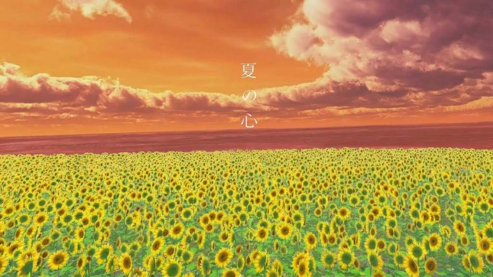
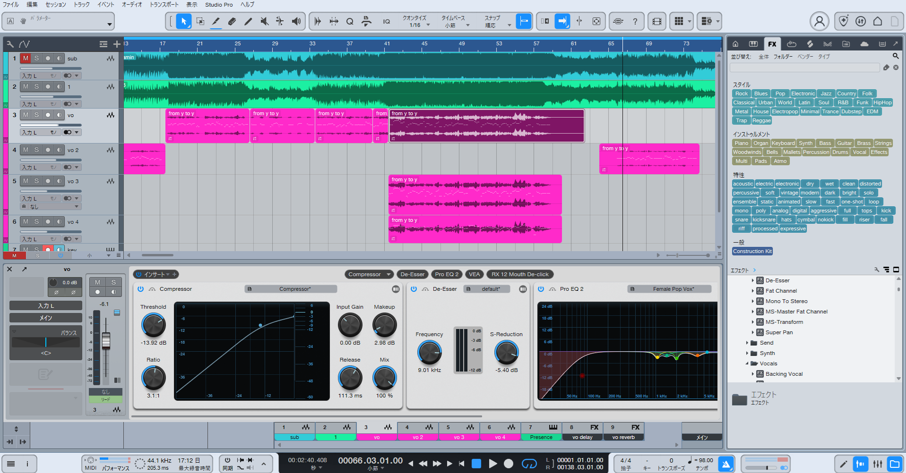
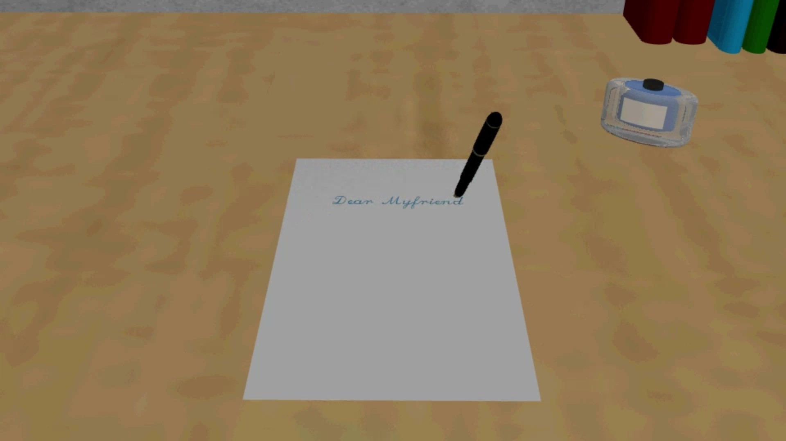

森 雄飛関西大学大学院 総合情報学研究科 知識情報学専攻 在学中
情報技術（VR/XR、AI）とクリエイティブ表現（音楽、映像、3DCG）を横断して学び、双方を組み合わせた「没入感のある体験設計」を研究・制作しています。見た目の美しさだけでなく、ユーザーが直感的に楽しめるUI/UXや、空間全体を通した体験の構築を目指しています。

“曲の世界に入り込む” 音と空間の調和による没入型音楽体験。VR酔い対策や360度視界の最適化など、UX設計にこだわった卒業制作です。

神社プロジェクションマッピングへの楽曲提供や、ボーカルMixなど。映像演出や依頼者の意図を汲み取り、音響面から体験を設計しました。

3DCGアニメーションによる空間表現。光の演出（ライティング）と自然なモノの動きの設計に注力しました。